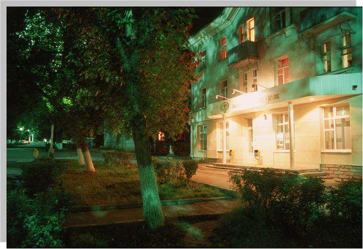

Коммунистический проспект
Первой улицей будущего города (с дощатым тротуаром) стала улица Сталина – и это естественно для “сталинского” города. Позднее её переименовали в Коммунистический проспект. Теперь это широкая, зелёная - в большей своей части пешеходная – улица. Она вполне могла именоваться бульваром, но “Коммунистический бульвар” – невозможное сочетание.
Каждую зиму на Коммунистическом проспекте вырастает снежный городок с ледяным горками , сказочными персонажами и нарядной, самой большой ёлкой в городе.